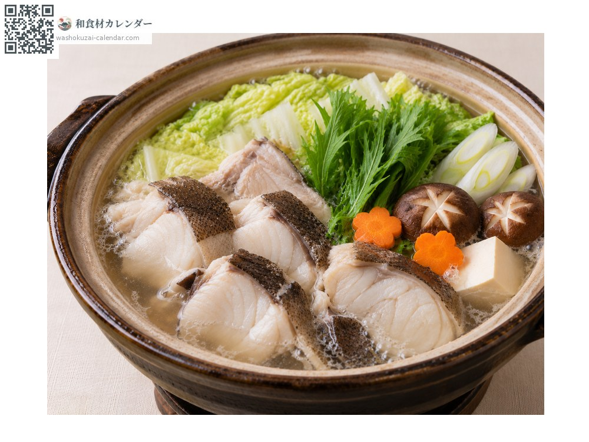
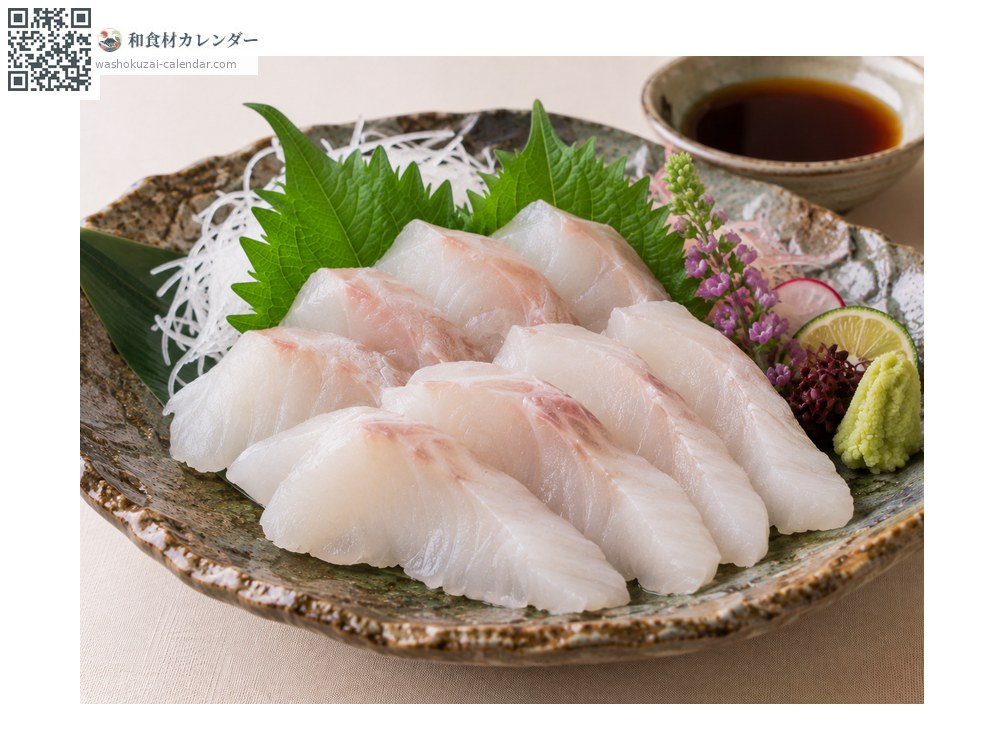
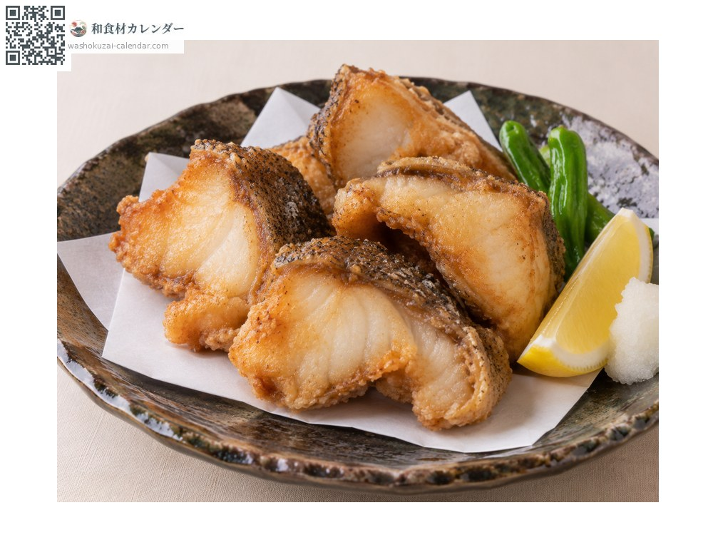
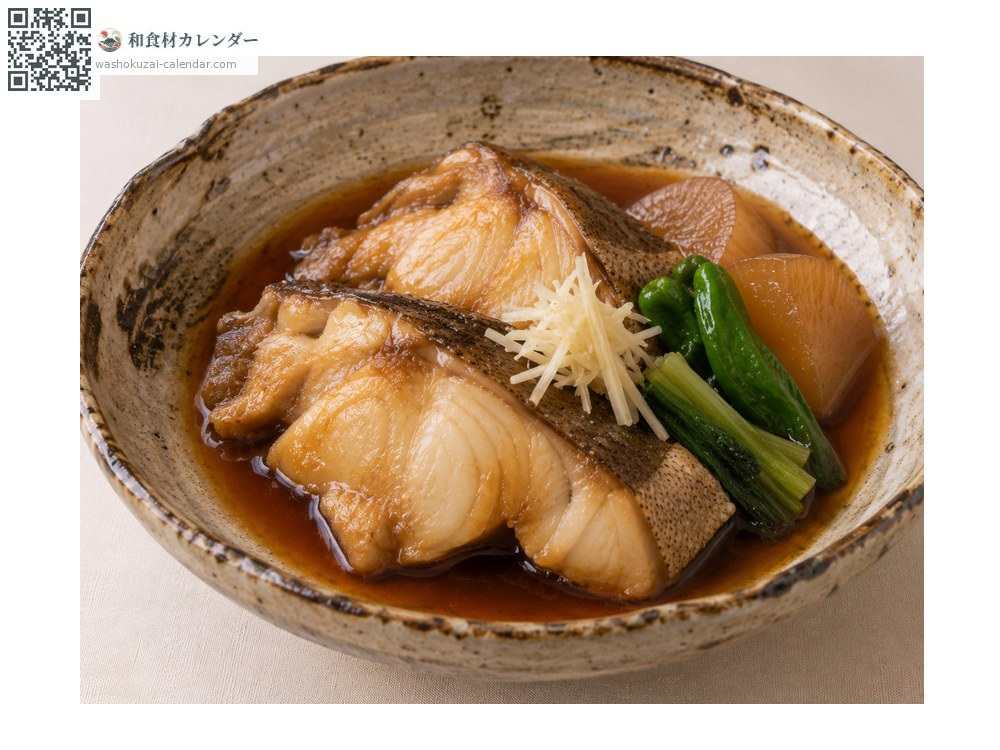

海鲜
长牙石斑（九绘）
クエ くえ kue
别名kue、ara
应季时期为1月、2月、11月、12月

应季时期
1月
2月
3月
4月
5月
6月
7月
8月
9月
10月
11月
12月
应季有供应
烹饪方法

石斑火锅
冬季最顶级的火锅。切片与鱼头鱼骨一起下锅，熬出浓厚的汤头。

生鱼片
把切片削成薄切。鱼肉弹性很强，鲜味浓郁。

日式炸物
把切片油炸，富含胶质的鱼皮会变得香酥。

甜酱油炖煮
把切片甜咸炖煮，鲜味就在皮与肉之间。
挑选方法
体色深、鱼身紧实。体型越大油脂越丰厚、鲜味越浓。
保存方法
肉质紧实所以耐放。整条以冰块保存，要用多少才处理多少。切片两到三天内用完。
主要产地
小知识
九州称之为「アラ」，但正式名称为アラ的是另一种鱼，需要注意区分。有超过一公尺的个体，冬天的石斑火锅被视为最顶级的料理。生长缓慢，天然的很稀少。